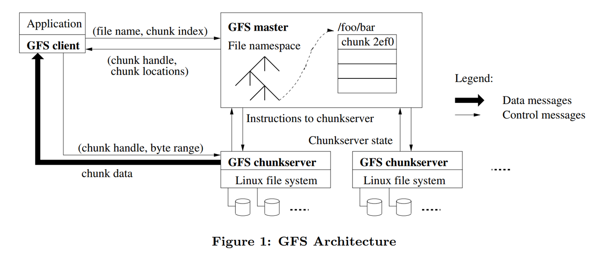
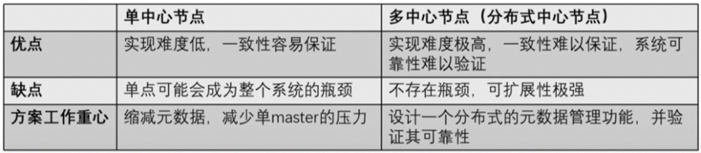
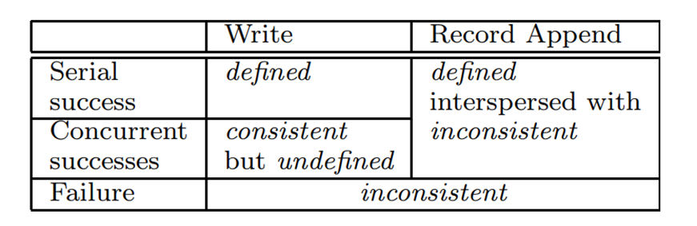
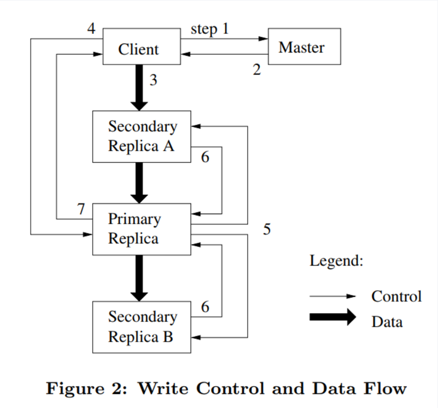

GFS¶
最主要的特性：弱一致性(weak consistency)，单主(single-master)
Introduction¶
Architecture¶

- 一个 GFS 集群包含了 a single master, multiple chunkservers，并且可以被多个clients访问
- 每个文件都会被分成多个 chunk(64MB in GFS)，每个 chunk 都会有一个唯一的 64bits 的 chunk handle 来标识，并且一般会有三个副本存储到不同的 chunkserver 上。我们可以通过 chunk handle 和 byte range(字节范围)来确定要读写的块
- single master 存储 [[#^193eb2|metadata]]，并且控制系统级活动，如 chunk 的租约管理，垃圾回收，和 chunk 在不同 chunkserver 之前的迁移，master 通过心跳机制来与每个 chunkserver 通信
- client 可以跟 master 和所有的 chunkservers 之间的通信。然后 client 上会缓存元数据，而不会缓存文件数据，一方面是文件数据很大，无法缓存，另一方面就是如果要缓存数据还要保证缓存一致性问题，这样系统就会更加复杂了，而缓存文件数据本来就是个没什么用的操作
Single Master¶

GFS 采用了一系列措施来确保 master 不会成为整个系统的瓶颈：
- 所有的数据流都不经过 master，而是直接由 client 和 chunkserver 交互（GFS 把控制流和数据流分离，只有控制流才会经过 master）
- client 会缓存 master 中的元数据，在大部分情况下，都无需访问 master。
- 采用了一些手段来节省 master 的内存，包括增大 chunk 的大小以节省 chunk 的数量、对元数据进行定制化的压缩等。 master 可以根据 client 提供的文件名和存储的偏移量知道副本所存在的位置
Chunk Size¶
64MB(much larger than typical file system block sizes)
- advantage:
- reduces clients’ need to interact with the master.
- perform many operations on a given chunk, it can reduce network overhead by keeping a persistent TCP connection to the chunkserver over an extended period of time.
- reduces the size of the metadata stored on the master.
- disadvantage: 1.
- hot spot
- internal fragmentation
lazy space allocation:
Metadata 元数据¶
The master stores three major types of metadata(keep in memory):
- the file and chunk namespaces (persistence)
- the mapping from files to chunks (persistence)
- the locations of each chunk’s replicas (nonpersistence)
The first two types (namespaces and file-to-chunk mapping) are also kept persistent by logging mutations to an operation log stored on the master’s local disk and replicated on remote machines. Using a log allows us to update the master state simply, reliably, and without risking inconsistencies in the event of a master crash.
为什么 chunk 副本的位置不持久化？ 可以通过持久化来恢复 master 宕机时间，但是这个数据信息 master 可以通过访问所有 chunkservers 来获取，考虑到 master 挂掉的情况不多，所以我们不存储来缩减 metadata，从而减少 master 的压力
master 会周期性地扫描 metadata，实现垃圾回收，chunkserver 故障时重做副本，负载均衡等功能
其他高可用设计：[[#^7424f7|Operation Log]]操作日志相关
Consistency Model¶
每个 chunk 文件在被修改时其 chunk version 都会自增，写操作会识别出那些 chunk version 落后的 chunk 并跳过写，这些落后的 chunk 会在垃圾回收过程被回收。每个 64Mb 的 chunk 文件的每个 64Kb 数据 block，都会记录一个 checksum（持久化到专门的 logging 文件），读取数据时需校验 checksum 是否正确来判断数据是否损坏。
master 对于分布式文件的新增、删除是强一致性的。GFS 在 master 有一个文件锁的设计，对文件加写锁可以防止并发创建同名的分布式文件，对目录加写锁可以防止目录下的文件新增和删除。
- 对一个 chunk 所有副本的写入顺序都是一致的。这是由控制流和数据流分离技术实现的，控制流都是由 primary 发出，而副本的写入顺序也是由 primary 到 secondary。
- 使用 chunk 版本号来检测 chunk 副本是否出现过宕机。失效的副本不会再进行写入操作 master 不会再记录这个副本的信息(等 Client 刷缓存时同步)，GC 程序会自动回收这些副本
- master 会定期检查 chunk 副本的 checksum 来确认其是否正确。
- GFS 推荐应用更多地使用追加来达到更高的一致性。
gfs关于写的两个接口
- write 操作可以将任意⻓度 len 的数据写入到任意指定文件的位置 off set
- record append 操作可以原子的将 len<=16MB 的数据写入到指定文件的末尾

GFS 的高可用设计¶
高可用问题（容错问题）：在发生故障时仍能不丢失数据并保持对外服务 -> 共识算法
GFS 诞生时共识算法不成熟，所以 Google 为此额外设计了高可用方案 解决问题
- 保证服务器在故障时文件不损坏不丢失 master 的 WAL 和主备；chunk 的多副本
- 在超多机器的情况下，实现自动监控、容错与恢复（自动切换主备）
master 的主备切换有 chubby 负责；chunk 的租约；master 负责副本的位置和数量
当时自动运维是一个比较特殊的设定
master 高可用设计（针对 metadata）¶
^7424f7
- 存在 primary master 和 shadow master（作为备份）
- 使用操作日志来持久化元数据
- 生成新增元数据的日志并写入本地磁盘
- 把 WAL(write head log)传输给 shadow master
- 得到反馈后再正式修改 primary master 的内存。
- master 可以通过重放操作日志来恢复文件系统的状态
自动切换：如果 master 宕机，会通过 Google 的 Chubby 来识别并切换到 shadow master(秒级操作) 和 MySQL 的主备机制非常像
chunk 的高可用设计¶
- 在 GFS 中，对一个 chunk 的每次写入，必须确保在三个副本中的写入都完成，才视为写入完成
- 一个 chunk 的所有副本都会具有完整的数据。
- 如果一个 chunkserver 宕机，它上面的所有 chunk 都有另外两个副本依旧可以保存这个 chunk 的数据。
-
如果这个宕机的副本在一段时间之后还没有恢复，那么 master 就可以在另一个 chunkserver 重建一个副本，从而始终把 chunk 的副本数目维持在 3 个(可以设置)。
-
GFS 维持每个 chunk 的校验和，读取时可以通过校验和进行数据的校验。如果校验和不匹配 chunkserver 会反馈给 master 处理，master 会选择其他副本进行读取，并重建此 chunk 副本，为了减少对 master 的压力，GFS 采用了一种租约(Lease)机制，把_文件的读写权限下放给某一个 chunk 副本。_
- Master 可以把租约授权给某个 chunk 副本，我们把这个 chunk 副本称为primary，在租约生效的一段时间内，对这个 chunk 的写操作直接由这个副本负责，租约的有效期一般为 60 秒
- 租约的主备只决定控制流走向，不影响数据流。
Attention
标准的主备同步：数据流和控制流都是从主到备 GFS 的租约机制：primary 只决定控制流走向，即决定写操作的顺序，但是数据流并不一定要通过 primary，而是采取了就近原则
- Chunk 副本的放置也是一个关键问题，GFS 中有三种情况需要 master 发起创建 chunk 副本分别是新 chunk 创建、chunk 副本复制(re-replication)和负载均衡(rebalancing)
- 副本复制则是指因为某些原因，比如一个副本所在的 chunkserver 宕机，导致 chunk 副本数小于预期值(一般为 3)后，新增一个 chunk 副本;
- 负载均衡则发生在 master 定期对 chunkserver 的监测，如果发现某个 chunkserver 的负载过高就会执行负载均衡操作，把 chunk 副本搬到另外的 chunkserver 上。当然，这里的“搬迁"操作，实际上就是新建 chunk 和删除原 chunk 的操作。
- 这三个操作中，master 对副本位置的选择策略是相同的，要遵循以下三点：
- 新副本所在的 chunkserver 的资源利用率较低
- 新副本所在的 chunkserver 最近创建的 chunk 副本不多。这里是为了防止某个 chunkserver 瞬间增加大量副本，成为热点
- chunk 的其他副本不能在同一机架（为了保证机架或机房级别的高可用）
GFS 的读写流程¶
GFS 作为一个文件系统，对读写的需求是什么样的呢？
- 读取 → 快速，为了极致的性能，可以读到落后的版本，但一定不能是错误的
- 写入一进一步分为两种:改写(overwrite)和追加(append)
- 改写 → 正确，通常不用在意性能。在意性能的改写可以转为追加。
- 追加 → 快速，为了极致的性能，可以允许一定的异常，但追加的数据一定不能丢失。
写入¶
- 写入时要在三个副本都完成写入后才能返回写入结果（为了保证读的高效准确）
GFS 的写入采用了两个在现在看来都非常高端的技术
- 流水线技术：client 会把文件数据发往离自己最近的一个副本，无论它是否是主(是否持有租约)。这个副本在接收到数据后，就立刻向其他副本转发(一边接收一边转发)。这样就控制了数据的流向，节省了网络传输代价。
- 数据流与控制流分离技术：GFS 对一致性的保证可以不受数据同步的干扰

写入流程
- Client 向 Master 询问要写入 chunk 的租约在哪个 chunkserver 上(Primary Replica)，以及其他副本(Secondary Replicas)的位置(通常 Client 中直接就有缓存)。如果目前没有任何一个 chunkserver 持有要访问的 chunk 的租约，master 就会选择一个副本，授予一个租约
- Master 返回数据，Client 接收并缓存数据。只有当 primary 无法访问或者不再持有租约时客户端才会再次和 master 交互
- Client 将数据发送到所有的副本上（不管发送的顺序），chunkserver 会把数据存储到内部的 LRU buffer 缓存中，直到这些数据被调用或是老化。通过将数据流与控制流解耦，我们可以通过基于网络拓扑调度昂贵的数据流来提高性能，而不管哪个 chunkserver 是 primary 的。（这一步就会用到流水线技术，也是写入过程中唯一的数据流操作）
- 确认所有副本都收到了数据之后，Client 就会向 Primary 发送 write 请求。primary 给其收到的所有修改指定连续的序列号，由于这些修改可能来自多个客户端，所有进行编号是有必要的。primary 按着序号的顺序将修改应用到自己的本地状态。（这里 Primary Replica 唯一确定写入顺序，保证副本一致性）
- primary 把 write 请求传递给所有的 secondary 副本，每个 secondary 副本以由 primary 指定的同样的序列号顺序应用修改（执行到这里 primary replica 已经写入成功了）
- 所有的 Secondary 回复 Primary 告知写入完成。
- Primary 回复 Client，会报告任何副本遇到的任何错误。如果有错误，write 可能已经在 primary 和部分 secondary 中成功完成了（如果操作是在 primary 这里失败了，那么其就不会被指定序列号并向 secondary 传递命令）此时 client 会认为请求已经失败，已经修改完的区域就会处于 inconsistent 的状态。然后 client 会重新从第 3 步开始执行
如果应用程序的 write 很大或者跨过了一个 chunk 的边界，client 就会把其拆成多个 write 操作。这些新的 write 操作也都遵循上述控制流（图 2），但可能会与来自其他客户端的并发操作交错并被覆盖。因此，共享文件区域最终可能包含来自不同客户端的片段，尽管副本将是相同的，因为单个操作在所有的副本上以相同的顺序成功完成。这就会出现我们在 2.7 中提到过的 consistent 但 undefined 的状态 undefined 就是指比如写入 A B 期望的是 A1, A2, B，但最终可能是 A1, B, A2
GFS 对于 chunk 的一致性有两种定义：
- consistent：客户端永远能看到一致的数据，无论他们从哪个 replica 读取数据；
- defined：当某个 chunk 发生修改后，client 能看到刚刚修改的所有数据。
write = update or append
- update 如果部分 chunk 成功，部分失败，那我们读到的文件就是不正确的
- update 大概率是一个分布式操作，也可能只是不断重复请求保证弱一致性（最终一致性）
- 追加失败的话，我们只是会读到过期而非错误的数据
GFS 的一致性
GFS(以及 Google 的绝大多数应用都)推荐使用 append
GFS 的一致性¶
- 对一个 chunk 所有副本的写入顺序都是一致的。这是由控制流和数据流分离技术实现的，控制流都是由 primary 发出，而副本的写入顺序也是由 primary 到 secondary。
- 使用 chunk 版本号来检测 chunk 副本是否出现过宕机。失效的副本不会再进行写入操作 master 不会再记录这个副本的信息(等 Client 刷缓存时同步)，GC 程序会自动回收这些副本
- master 会定期检查 chunk 副本的 checksum 来确认其是否正确。
- GFS 推荐应用更多地使用追加来达到更高的一致性。
Advantage and Disadvantage¶
Advantage master 和 chunkserver 的设计，将文件管理和文件存储分离 将文件分割成 chunk 存储，可并发访问，吞吐量较大 修改数据时控制流和数据流分离，充分利用每台机器的带宽 使用 lease 降低 master 工作负载，防止 split-brain 问题 对文件追加和顺序读的功能有优化 好的容错性 Disadvantage 只有一个 master ，元数据过多的话可能内存不够用 client 量很大的话，一个 master 负载过大 master 不能出错自动重启，出故障后人工切换 master 比较耗时 master 通过浏览所有的 chunk 进行垃圾回收效率太低 不擅长处理随机写问题、海量小文件存储 一致性过松，无法处理对一致性要求高的任务 GFS 被设计用于运行在单个数据中心的系统